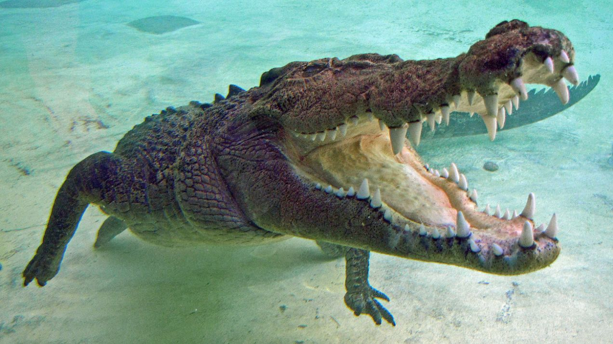

Niebezpieczne zwierzęta większości z nas kojarzą się przede wszystkim z wielkimi drapieżnikami, ale wiele z nich nie musi mieć ostrych kłów, wielkich pazurów i silnych łap, by być najsprawniejszymi zabójcami w świecie przyrody. Niektórych gatunków nawet nie kojarzymy z poważnym zagrożeniem. Choć to człowiek wygrał wyścig ewolucyjny, to w obliczu najgroźniejszych zwierząt i tak pozostajemy niemal bezbronni.
Waran z Komodo, nazywany też smokiem z Komodo, to największa żyjąca jaszczurka. Żywi się przede wszystkim padliną, ale niech upodobania kulinarne tego potwora nikogo nie zwiodą - to niezwykle sprawny zabójca, który równie ochoczo poluje. Waran z Komodo zadowala się ptakami, ale w jego zasięgu pozostają też duże ssaki. Bez problemu zabije i pożre człowieka.
Waran z Komodo (Varanus komodoensis) – gatunek gada z rodziny waranów nazywany smokiem z Komodo. To największa współcześnie żyjąca jaszczurka. Odkryta w 1910 roku. Aby ją chronić, założono w 1980 r. Park Narodowy Komodo.
Większe kręgowce, głównie ptaki i ssaki (konie, bawoły wodne, świnie, jelenie) odnotowano także kilka śmiertelnych ataków na ludzi, warany są także kanibalami. Warany z Komodo nie mają wrogów naturalnych w łańcuchu pokarmowym, jedynym zagrożeniem dla młodych waranów są dorosłe osobniki.
Największe gady na świecie, Warany z Komodo, potrafią zabić jednym ugryzieniem, a wszystko przez silnie infekującą ślinę. Ślina warana z Komodo zawiera ok. 50 szczepów bakterii, które powodują śmiertelną infekcję. Ugryzione zwierzę zdycha w ciągu 2-3 dni, a waran odnajduje je dzięki doskonale rozwiniętemu węchowi.
Co potrafi waran z Komodo? Waran z Komodo jest największą jaszczurką na świecie. Hodowla tego zwierzęcia w domu jest w Polsce zakazana i bardzo słusznie, ponieważ zwierzę to jest bardzo niebezpieczne. W jego ślinie znajdują się bakterie oraz jad, a ponadto jaszczurka ta potrafi szybko pływać i gonić ofiarę.
Wbrew pozornej ociężałości potrafią być bardzo szybkie. Są mięsożercami, zjadają głównie ptaki i ssaki (nawet duże - bawoły, świnie czy jelenie), ale zdarza się, że atakują również ludzi. Większe ofiary waran, który potrafi ważyć nawet 90 kg, powala uderzeniem ogona. Siła tego ciosu dochodzi do dwóch ton.
Niedźwiedź polarny, jest gatunekiem dużego ssaka drapieżnego z rodziny niedźwiedziowatych, zamieszkującego Arktykę. Jest drapieżnikiem szczytowym w zasięgu swojego występowania. Grube futro i warstwa tłuszczu chronią go przed zimnem. Włosy tworzące sierść niedźwiedzia są półprzezroczyste.
Niedźwiedź polarny, niedźwiedź biały (Ursus maritimus) – gatunek dużego ssaka drapieżnego z rodziny niedźwiedziowatych, zamieszkującego Arktykę. Jest drapieżnikiem szczytowym w zasięgu swojego występowania. Grube futro i warstwa tłuszczu chronią go przed zimnem. Włosy tworzące sierść niedźwiedzia są półprzezroczyste; sierść jako całość ma zazwyczaj kolor biały lub kremowy, przez co umożliwia zwierzęciu dobry kamuflaż. Skóra ma barwę czarną. Niedźwiedź polarny ma krótki ogon i małe uszy, co pomaga mu redukować utratę ciepła. Stosunkowo mała głowa i długie, zwężające się ku tyłowi ciało nadają mu opływowy kształt przydatny do płwania. Jest ssakiem prowadzącym niemal morski tryb życia, potrzebującym do przetrwania jedynie kawałka pływającego lodu i żywności znajdowanej w wodzie oraz miejsca do urodzenia i odchowania młodych. Jego systematyczna (łacińska) nazwa Ursus maritimus oznacza „niedźwiedź morski”. Przystosował się do życia na lądzie, morzu i lodzie.
Zabijają je jednym uderzeniem łapy. Zimą polują także na ptaki, gryzonie, skorupiaki, kraby, białuchy, młode morsy, okazjonalnie piżmowoły lub renifery i bardzo rzadko na inne niedźwiedzie polarne.
Niedźwiedzie polarne uznawane są za jedne z najbardziej niebezpiecznych zwierząt na świecie. Większość dzikich gatunków raczej unika człowieka, jednak w przypadku niedźwiedzi polarnych, możemy znaleźć się nawet w ich menu.
Głównym źródłem pożywienia niedźwiedzia polarnego są inne zwierzęta - przede wszystkim foki, renifery, pieśce, mordy, narwale, zające, białuchy, ptaki oraz ryby. Jest zdecydowanie mięsożerny i na jedną porcję potrafi zjeść nawet 60 kg mięsa foki.
Żarłacz biały, rekin biały, rekin ludojad, żarłacz ludojad (Carcharodon carcharias) – gatunek ryby chrzęstnoszkieletowej z rodziny lamnowatych (Lamnidae), jedyny żyjący współcześnie przedstawiciel rodzaju Carcharodon, jeden z największych rekinów drapieżnych. Poławiany komercyjnie i sportowo.
Rekiny osiągają długość od 15 cm do 18 metrów ( rekin wielorybi), a masę ciała nawet do 12 ton. Najgroźniejsze gatunki, np. żarłacz biały czy tygrysi posiadają ostre i spiczaste zęby, ułożone w szeregi, stopniowo zużywane i zastępowane nowymi. Inne gatunki mogą mieć również postrzępiony brzeg zębów.
Każdego roku na świecie dochodzi średnio do 77 takich niebezpiecznych spotkań, w których ginie od sześciu do dziesięciu osób.
Ciało krępe, wrzecionowate, silnie umięśnione, osiąga przeciętnie długość do 6 metrów, przy masie do 2 ton (samice większe od samców). Maksymalna potwierdzona długość to 7,2 m przy masie 3,4 tony.
Rekin żarłacz biały (Carcharodon carcharias) posiada szczęki o największej sile nacisku, pośród wszystkich współcześnie żyjących zwierząt. Siła nacisku jego szczęk może osiągać w przypadku największych osobników 18 000 N, co jest odpowiednikiem 1800 kg/cm2
Bawół afrykański (Syncerus caffer) – duży ssak roślinożerny należący do rodziny wołowatych (Bovidae). Afrykański bawół nie jest blisko spokrewniony z nieco większym azjatyckim wołem domowym. Jego pochodzenie wciąż pozostaje niejasne. Gatunek ten nie został nigdy udomowiony.
Występują od otwartej sawanny do gęsto porośniętych lasów tropikalnych. Zasięg występowania obejmuje takie państwa jak Sudan, Zambia, Zimbabwe, Namibia, Botswana, Mozambik, Południowa Afryka, Kenia i Tanzania. Sierść bawołów ciemnieje z wiekiem. W końcu staje się ciemnobrązowa, prawie czarna. Osadzone na dużej głowie rogi są u podstawy bardzo masywne. Występują u obu płci, jednak wypustkę rogową posiadają tylko samice. Silne kończyny są zakończone dwoma palcami pokrytymi racicami. Ogon zakończony dużym chwostem sięga pęcin.
Zaliczany do "Wielkiej piątki Afryki", powszechnie uważany jest za bardzo niebezpieczne zwierzę, ponieważ przebija rogami i zabija kilku ludzi co roku. W Afryce uważa się, że bawoły zabijają więcej ludzi niż jakiekolwiek inne zwierzę, pomimo że hipopotamy nilowe i krokodyle nilowe mają więcej ofiar.
Czy bawoły są agresywne? Bawół jest silnym zwierzęciem i gdy atakuje, robi to zapalczywie. Jeżeli cię dopadnie, już po tobie. Zabije cię – mówi Petrus Motsoane, kierownik ekipy i kierowca ciągnika siodłowego Volvo, którym zostaną odtransportowane te agresywne zwierzęta.
Podczas pory suchej stada bawołów liczące nawet do 2000 osobników dzielą się na mniejsze grupy. Z powodu upałów często zażywają kąpieli błotnych, a potem ocierają się o korę drzew, żeby pozbyć się zaschniętej warstwy błota.
(Loxodonta africana) – gatunek ssaka z rodziny słoniowatych (Elephantidae), największe współcześnie żyjące zwierzę lądowe. Zwierzę stadne, zamieszkuje afrykańską sawannę, lasy i stepy. W starożytności wykorzystywane jako zwierzęta bojowe.
Słoń afrykański w Afryce Subsaharyjskiej, głównie we wschodniej i południowej Afryce, od północnego Kamerunu i południowego Czadu do Sudanu Południowego, Etiopii i Erytrei, a następnie na południe do Angoli, Zambii, Malawi, Mozambiku, Zimbabwe, Namibii, Botswany, Eswatini i Południowej Afryki; rozproszone populacje występują również w zachodniej Afryce od Senegalu po Nigerię, ale ich status taksonomiczny jest nadal przedmiotem dyskusji. Słoń afrykański to gatunek zagrożony wyginięciem. Zwierzęta są zagrożone w wyniku niszczenia środowiska i kłusownictwa. Zabijanie dla kości słoniowej, skór i mięsa, nierzadko dla sportu doprowadziło do spadku populacji słoni z kilku milionów do 700 tys. osobników w 1989. Obecnie słoń afrykański jest chroniony przepisami konwencji waszyngtońskiej (CITES). W październiku 1989 roku został wprowadzony zakaz wszelkiego handlu kością słoniową, złagodzony w czerwcu 1997.
Największe zwierzę lądowe nie da się oswoić, a gdy poczuje zagrożenie, atakuje bez chili zawahania. Ważący 6 ton kolos z łatwością dogania i zadeptuje człowieka. Rocznie, to olbrzymy zabijają nawet kilkaset osób.
Słoń afrykański ma długą i umięśnioną trąbę, która powstała z połączenia wydłużonego nosa i górnej wargi. Na jej zakończeniu znajdują się dwa chwytne wyrostki palczaste. Inną cechą charakterystyczne są wystające do przodu i ostro zakończone siekacze (ciosy), które u samców osiągają wagę 15-20 kg, a u samic do 7 kg.
Słoń afrykański to największe żyjące współcześnie zwierzę lądowe. Niestety istnieje realne ryzyko, że słoń afrykański podzieli los mamuta włochatego i przejdzie do historii jako gatunek wymarły.
Waran z Komodo, nazywany też smokiem z Komodo, to największa żyjąca jaszczurka. Żywi się przede wszystkim padliną, ale niech upodobania kulinarne tego potwora nikogo nie zwiodą - to niezwykle sprawny zabójca, który równie ochoczo poluje. Waran z Komodo zadowala się ptakami, ale w jego zasięgu pozostają też duże ssaki. Bez problemu zabije i pożre człowieka.
Kobra indyjska zwana także okularnikiem (Naja naja) – gatunek jadowitego węża z rodziny zdradnicowatych, zamieszkujący Pakistan, Indie, Sri Lankę, Bangladesz, Nepal, Bhutan i prawdopodobnie wschodni Afganistan. Ubarwienie brązowe lub piaskowe z charakterystycznym rysunkiem okularów na kapturze szyjnym, rozciąganym przez kobrę w chwili zagrożenia. Żywi się drobnymi kręgowcami, zwłaszcza gryzoniami. Często spotykana w pobliżu siedzib ludzkich, do których dociera w poszukiwaniu pożywienia. Dysponuje silnym jadem, składającym się z neurotoksyn. Ukąszenie człowieka może zakończyć się jego śmiercią, jeśli odpowiednio szybko nie zostanie podana surowica.
Przedstawiciele tego gatunku żywią się drobnymi ssakami. Podstawa ich diety to gryzonie – myszy i szczury. Czasami kobra indyjska poluje także na ptaki – także te domowe.
Zachowanie. Kobra atakuje w obronie własnej, kiedy jest niepokojona podczas posiłku lub w okresie godowym. W razie niebezpieczeństwa (kobra plująca i czarno szyja) rozpylają krople jadu w skoncentrowanej wiązce w oczy zbliżającego się napastnika.
Na jad kobry indyjskiej składają się zarówno neurotoksyny, jak i kardiotoksyny. Oznacza to, że po ukąszeniu sparaliżowany zostaje zarówno układ nerwowy, jak i krążeniowy. Dochodzi do stosunkowo szybkiego zatrzymania akcji serca a w konsekwencji do śmierci.
Kobra indyjska nie jest agresywna,w sytuacji zagrożenia wybiera ucieczkę. Sprowokowana i osaczona rozszerza przednią część ciała i atakuje. Jej jad jest bardzo silny i niebezpieczny dla człowieka. Jej ukąszenie może zabić już w ciągu kilkunastu minut.
Niedźwiedź polarny, jest gatunekiem dużego ssaka drapieżnego z rodziny niedźwiedziowatych, zamieszkującego Arktykę. Jest drapieżnikiem szczytowym w zasięgu swojego występowania. Grube futro i warstwa tłuszczu chronią go przed zimnem. Włosy tworzące sierść niedźwiedzia są półprzezroczyste.
Krokodyl różańcowy (Crocodylus porosus) – gatunek gada z rodziny krokodyli właściwych (krokodylowatych). Jest największym współcześnie żyjącym gadem, a także największym drapieżnikiem na lądzie i rzekach całego świata. Samce krokodyli różańcowych mogą osiągać 6,3 m długości i ważyć 1360 kg. Typowe rozmiary dorosłych samców mieszczą się w przedziale 4,3–5,2 m długości i 400–1000 kg wagi, ale zdarzają się również okazy o większych rozmiarach. Samice są o wiele mniejsze i zazwyczaj nie przekraczają 3 m długości. Krokodyle te mogą żyć w słonej wodzie, lecz najczęściej można je spotkać w lasach namorzynowych, estuariach, deltach rzek, lagunach i dolnych odcinkach rzek. Posiadają największy zasięg siedliskowy spośród wszystkich żyjących krokodyli, rozciągający się od wschodniego wybrzeża Indii, przez większą część Azji Południowo-Wschodniej do północnej Australii.
Krokodyl różańcowy jest najczęściej spotykanym ze wszystkich krokodyli. Występuje na terenie Indii, Azji Południowo-Wschodniej oraz Australii. Jest ekstremalnie niebezpieczny, a spotkanie z nim może skończyć się śmiercią.
Nieoczekiwanie dorównuje jej żółw jaszczurowaty. Ale najlepszy wynik uzyskał krokodyl - 2500 funtów, czyli nieco ponad 1130 kilogramów. Według naukowców badających szczątki dinozaurów, trzy tony nacisku szczęk to wynik, który uzyskiwał ważący sześć ton, trzynastometrowy tyrannosaurus rex.
Poluje na wszelkie zwierzęta o odpowiedniej wielkości, najczęściej są to różne ssaki a także ptaki wodne oraz gady. Podobnie jak inne krokodyle na zdobycz czatuje zanurzony w wodzie, stąd też często jego łupem padają zwierzęta odwiedzające wodopój.
Wałęsak brazylijski (Phoneutria) – rodzaj agresywnych oraz silnie jadowitych pająków z rodziny Ctenidae, żyjących w tropikalnej części Ameryki Południowej i Północnej. Pająki te osiągają od 17 do 48 mm długości ciała.
Pająki te osiągają od 17 do 48 mm długości ciała[2]. Od innych przedstawicieli rodziny wyróżniają się obecnością u obu płci gęstych scopulae (kępek włosków) na przednio-bocznej powierzchni goleni i stóp nogogłaszczków[3] oraz postawą obronną z wzniesionym, ruszającym się na boki ciałem i wysoko uniesionymi dwiema początkowymi parami odnóży. Karapaks tych pająków jest owalny, dłuższy niż szeroki, zaokrąglony z przodu i ścięty z tyłu, ubarwiony brązowo z czarnymi liniami na krawędziach bocznych i czarnym rowkiem tułowiowym. Oczy mają umieszczone na nabrzmiałych wzgórkach, w dwóch odchylonych ku tyłowi rzędach. Trzy ząbki występują na przedniej i pięć na tylnej krawędzi szczękoczułków. Sternum jest z przodu ścięte, z tyłu spiczaste. Odnóża są brązowe, zwieńczone dwoma grzebieniastymi pazurkami. Wierzch opistosomy (odwłoka) jest jasnobrązowy z jasnymi kropkami ułożonymi w dwa podłużne rzędy. Na ciemnobrązowym do żółtawego spodzie opistosomy obecne białe kropki rozchodzące się promieniście od kądziołków przędnych. Stożeczek trójkątnego kształtu. Narządy rozrodcze samców odznaczają się kubkowatą środkową apofizą tegularną, błoniastym konduktorem i nabrzmiałym, zakrzywionym embolusem. Genitalia samic z trójkątną lub czworokątną płytką płciową o wyniesionym polu środkowym oraz kulistych spermatekach. Dawniej pająki te bywały błędnie identyfikowane w obrębie rodziny z uwagi na wyraziste, czerwone owłosienie szczękoczułków – cecha ta nie jest jednak diagnostyczna dla rodzaju. Cupiennus chiapanensis także ma czerwone włoski na szczękoczułkach, podczas gdy niektóre Phoneutria są takowych pozbawione.
Ukąszenie Wałęsaka brazylijskiego wywołuje szereg groźnych objawów jak silny ból, pobudzenie, ślinotok, potliwość, arytmię, porażenie nerwowe, a w najgorszym wypadku powoduje śmierć. Jad tego pająka to prawdziwy koktajl różnorodnych substancji - peptydów, wolnych aminokwasów, histaminy i serotoniny.
Nazywany jest wałęsakiem brazylijskim, choć nazwa ta dotyczy całego rodzaju Phoneutria. Ciało zbudowane z głowotułowia i odwłoka, gęsto pokryte włoskami. Na głowotułowiu występuje 6 par odnóży. Pierwszą parą odnóży są szczękoczułki (zwane chelicerami).
Ukąszenie przez jadowitego egzotycznego pajęczaka może skutkować poważnymi problemami ze zdrowiem, a nawet skończyć się śmiercią. Autor: Getty Images Wałęsak brazylijski nazywany jest też bananowym pająkiemu. Jego ukąszenie jest bolesne, powoduje mdłości i wymioty, drgawki, skurcze, a także obrzęk w miejscu ukłucia.
Hipopotam nilowy (Hippopotamus amphibius) – gatunek dużego, przeważnie roślinożernego ssaka, należącego do rodziny hipopotamowatych (Hippopotamidae), w obrębie której wyróżnia się dwa współcześnie żyjące gatunki (drugim jest dużo mniejszy hipopotam karłowaty). Hipopotam nilowy jest jedynym żyjącym przedstawicielem rodzaju Hippopotamus. Nazwa gatunku pochodzi z języka starogreckiego i oznacza „koń rzeczny” (ἱπποπόταμος).
Zasiedlają rzeki i jeziora w Afryce na południe od Sahary do 2000 m n.p.m. Hipopotamowate to jedyna rodzina rzędu parzystokopytnych prowadząca ziemnowodny tryb życia. W ciągu dnia najczęściej pozostają w wodzie; aktywne dopiero o zmierzchu i nocą, skubią wtedy trawę na łąkach w pobliżu wody, zjadają także rośliny wodne. W poszukiwaniu pożywienia potrafią zapuszczać się do 8 km w głąb lądu. Przebywają w stadach składających się z dominującego samca i podlegających mu samic w liczbie od 10 do 40 osobników. Samce bronią i przewodzą terytorium obejmujące pewien odcinek rzeki i na nim gromadzą swój harem. Na lądzie hipopotamy są raczej indywidualistami i nie przejawiają instynktu terytorialnego. Rozmnażanie i poród odbywa się w wodzie. Samica po ośmiomiesięcznej ciąży rodzi 1 młode. Młode ssie matkę przez okres 1 roku, również pod wodą. Pomimo fizycznych podobieństw do świń i innych znanych parzystokopytnych, ich najbliżsi żyjący krewni to walenie – wieloryby, morświny, delfiny itp. Wspólny przodek wielorybów i hipopotamów oddzielił się od innych parzystokopytnych około 60 milionów lat temu. Najstarsze znane skamieniałości hipopotamów z rodzaju Kenyapotamus, pochodzą sprzed 16 milionów lat, odnaleziono je w Afryce.
W ciągu dnia najczęściej pozostają w wodzie; aktywne dopiero o zmierzchu i nocą, skubią wtedy trawę na łąkach w pobliżu wody, zjadają także rośliny wodne. W poszukiwaniu pożywienia potrafią zapuszczać się do 8 km w głąb lądu.
W ciągu ostatnich tygodni kilka osób musiało ratować się ucieczką przed hipopotamami, które wybiegają z rzeki i w obronie terytorium atakują ludzi. Hipopotam, choć wygląda na nieporadne zwierzę, porusza się z ogromną prędkością i jest uznawany za jedno z najbardziej niebezpiecznych i agresywnych zwierząt świata.
Hipopotamy mają charakterystyczny wygląd: beczkowaty tułów, brak owłosienia na ciele, krótkie nogi, dużą głowę i znaczne rozmiary. Pod względem wielkości dorównują nosorożcom białym, ustępując jedynie słoniom.
Komary tygrysie są znacznie groźniejsze od dobrze znanych nam i licznie występujących na teranie Polski – komara widliszka czy komara brzęczącego. Na razie nie potwierdzono oficjalnie, by gatunek ten dotarł do Polski, choć widziany był u naszych sąsiadów – w Niemczech, Czechach czy na Słowacji.
Komar tygrysi pod względem rozmiaru może przypominać występujące w Polsce komary brzęczące i widliszki, ale część osobników może być nawet o 4 mm dłuższa, osiągając tym samym do 10 mm długości. Wygląd komara tygrysiego jest też dość charakterystycznym ze względu na kolorystykę. Na ciemnym odwłoku i odnóżach owada dostrzec można białe paski i kropki.
Zagrożenie, jakie dla ludzi stanowią komary tygrysie, wynika z ryzyka przenoszenia przez te owady poważnych chorób tropikalnych, takich jak denega, gorączka zachodniego nilu, gorączka chikungunya, żółta ferba
Najczęściej ukąszenie komara tygrysiego nie jest groźne i jego objawy, czyli zaczerwienienie skóry i swędzenie mijają po krótkim czasie. Jednak komary tygrysie mogą przenosić patogeny, które powodują różnorodne choroby.
Naukowcom znanych jest około 3500 gatunków komarów. Część z nich przenosi groźne choroby i wirusy. Są to owady szczególnie niebezpieczne dla zwierząt. Znane są przypadki, gdzie komary były bezpośrednimi sprawcami ich śmierci.
Komar tygrysi ma charakterystyczne biało-czarne paski na całym ciele, które przypominają paski tygrysa (stąd nazwa). Owady te, w zależności od warunków, w których bytują, osiągają długość od 2 do 10 mm. Samice są większe od samców o ok. 20%.